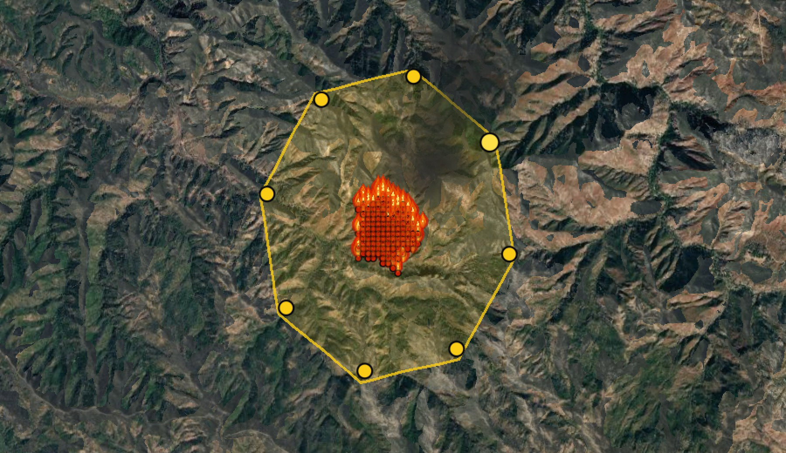
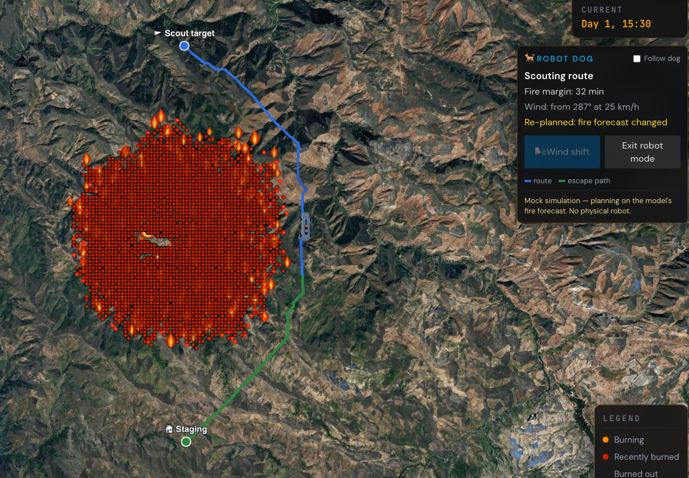

Tested on 6 fires the model never saw (USA, Bolivia, Siberia, Greece).
In these fires 91% of cases are "fire spreads," so we compare against a simple baseline that always guesses "spreads."
Takeaway: the model ranks which cells are at risk clearly better than chance, and its probabilities are more accurate than the baseline. It still leans toward "spreads," which we are working to improve.

Pause the fire and draw a containment line. A search algorithm finds the lowest-cost mix of crews, engines, dozers and aircraft that keeps the fire inside it.
Example answer for this fire: 9 dozers + 1 helicopter crew + 1 air tanker.
That line is exactly where the robot dog would scout (loop step 4).

Code: github.com/sxz2012/wildfire-simulation
NASA FIRMS (VIIRS active-fire detections) · Open-Meteo weather archive · ESA WorldCover 10 m land cover · Cesium World Terrain · Google Photorealistic 3D Tiles
Rothermel, R. C. (1972). A mathematical model for predicting fire spread in wildland fuels. USDA Forest Service INT-115.
Chen, T. & Guestrin, C. (2016). XGBoost: A scalable tree boosting system. KDD '16.